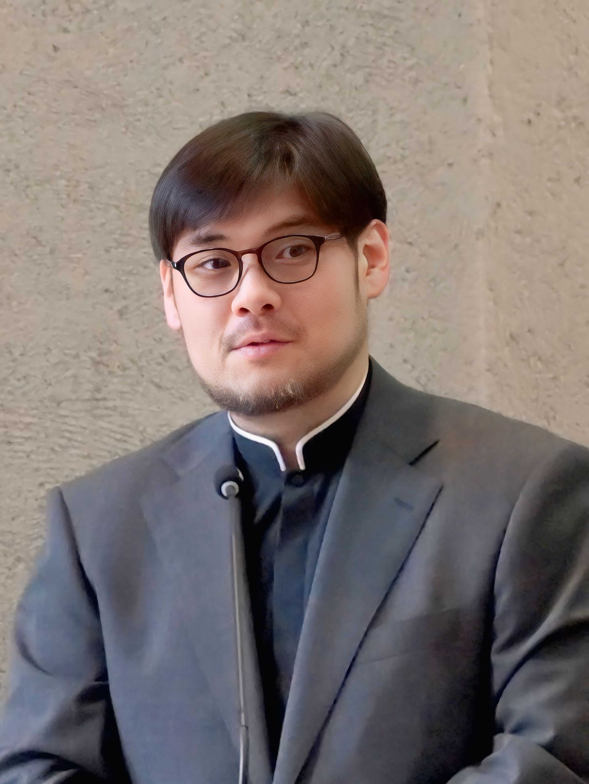
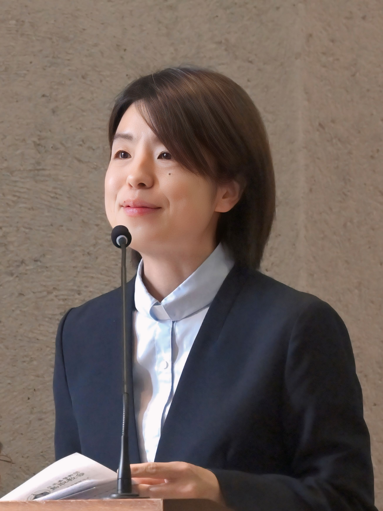

Pastor
牧師紹介

Pastor
金 鍾圭
1982年、韓国生まれ。監理教（韓国メソジスト）神学大学および大学院卒業。
神学を学ぶ前は、大学で情報通信を専攻。日本の歴史や文化に関心を持ち、ゲームや映画などを通して日本語を独学。
2011年、宣教師として日本に派遣される。2014年より石橋教会担任教師。2020年から2026年3月まで、大阪YMCA国際高等学校非常勤講師。
2026年より、鳥取教会主任担任教師、愛真幼稚園チャプレン。

Pastor
仲程愛美
1985年、横浜生まれ。同志社大学神学部および神学研究科卒業。
弓町本郷教会伝道師を経て、2014年より石橋教会主任担任教師。同志社国際中学校・高等学校、梅花中学校・高等学校、大阪女学院中学校・高等学校、同志社女子大学で非常勤講師を務める。同志社大学キリスト教文化センターチャプレンも務める。
2026年より、鳥取教会担任教師、愛真幼稚園園長。